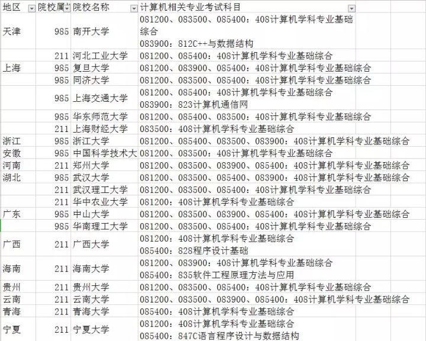
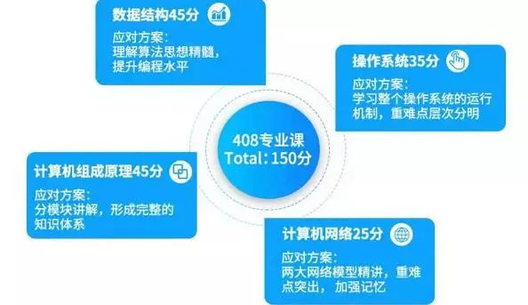

启发
今天聊起自己想考计算机专业，一心想考心仪大学的计算机研究生，但是内心坚信自己根本考不上。当你面对两个选择的时候，选择更难走的那条路，显然我有这个想法，但是内心已经认定这条难走的路根本就是一条死路。
既然这样，我为什么不能把这条路看的更加透彻呢，做更多的准备，而不是坚定自己模糊的印象。
所以，我开始搜集各种各样的信息，当然很多学校都是超级难考的，先搜集，再选择。
北航考研(961)
2020年硕士研究生入学考试专业课考研大纲
(这考试内容，我除了计算机网络能看懂一点要考什么，其他的甚至都不知道要考什么。)
考试组成
961计算机基础综合共包括三门课程的内容：计算机组成原理、操作系统、计算机网络技术，分别占60分，50分、40分。所有课程均不指定参考书。
408 操作系统，计算机网络，数据结构，计算机组成。
这两门重合的有
计算机组成原理部分的考试大纲（60分）
整体要求
(一).理解单处理器计算机系统中各部件的内部工作原理、组成结构以及相互连接方式，具有完整的计算机系统的整机概念；
(二).理解计算机系统层次化结构概念，掌握以MIPS为代表的RISC指令集体系结构的基本知识，能对MIPS汇编程序设计语言的相关问题进行分析；
(三).理解计算机存储系统的层次化结构，掌握层次化存储系统的设计、分析和性能计算；
(四).能根据指令语义进行单周期、多周期或流水线MIPS处理器的数据通路及其控制器的分析和简单设计；
(五).理解并掌握输入输出系统的基本知识。
知识要点
(一)、计算机系统概述
（1）计算机系统的基本组成与层次结构
（2）计算机系统的性能指标：吞吐量、响应时间、带宽、延迟；CPU时钟周期、主频、CPI、CPU执行时间；MIPS、MFLOPS、GFLOPS、TFLOPS、PFLOPS。
(二)、数据的表示和运算
（1）数制与编码
（2）定点数和浮点数的表示和运算
（3）算术逻辑单元ALU
l串行加法器和并行加法器
l算术逻辑单元ALU的功能和结构
(三)、存储器层次结构
（1）存储器的层次化结构
（2）主存储器与CPU的连接
（3）高速缓冲存储器(Cache)
lCache的基本工作原理
lCach和主存之间的映射方式
lCache中主存块的替换算法与写策略
l多层次Cache性能计算
（4）虚拟存储器
l虚拟存储器的基本概念
l页式虚拟存储器
lTLB(快表)
(四)、MIPS指令系统及汇编语言
（1）指令系统的基本知识（指令格式、寻址方式）
（2）MIPS汇编语言
(五)、MIPS处理器
（1）CPU的功能和基本结构
（2）单周期、多周期MIPS处理器数据通路的功能和基本结构
（3）硬布线控制器的功能和工作原理
l单周期处理器控制器
l多周期处理器控制器
（4）指令流水线
l指令流水线的基本概念
l流水线冒险及处理策略
l指令流水线的基本实现
（六）、总线与输入输出(I/O)系统
（1）总线的基本概念
（2）磁盘存储器
（3）I/O控制器
lI/O控制器的功能和基本结构
l存储映射I/O编址
（4）基本I/O方式
l程序查询方式
l程序中断方式：中断的基本概念，中断响应过程，中断处理过程，多重中断和中断屏蔽的概念；
lDMA方式，DMA控制器组成，DMA传送过程，设备传输性能计算。
操作系统部分的考试大纲（50分）
（一）可参考书目
1.操作系统实用教程（第三版），任爱华，清华大学出版社。
2.现代操作系统(Modern Operating System) (The 3rd Edition),陈向群,马洪兵等译,Andrew S. Tanenbaum著,机械工业出版社。
（二）复习内容
1.操作系统概述
a)操作系统的基本概念；内核态与用户态、中断、异常和系统调用。
2.进程管理
a)进程、线程的基本概念以及两者的区别；
b)进程控制块、进程的状态与转换；
c)进程同步的基本概念；实现临界区互斥的基本方法；信号量机制及P、V操作；了解经典同步问题，并通过信号量机制解决进程同步问题。
d)进程间通信，包括共享存储系统、消息传递系统、管道。
e)进程调度的基本准则；典型调度算法：先来先服务调度算法、短作业(短进程、短线程)优先调度算法、时间片轮转调度算法、优先级调度算法。
f)死锁的形成原因与必要条件；死锁预防、死锁避免、死锁检测和解除。
3.内存管理
a)程序装入与链接；逻辑地址与物理地址空间；重定位；内存保护。
b)分区管理；交换与覆盖技术；
c)分页管理方式；分段管理方式；段页式管理方式。
d)虚拟内存基本概念和局部性原理；缺页中断；地址变换过程；
e)页面置换算法：最佳置换算法(OPT)、先进先出置换算法(FIFO)、最近最少使用置换算法(LRU)、时钟置换算法(CLOCK)；工作集模型。
4.设备管理
a) I/O控制方式：程序控制、中断、DMA、通道；缓冲技术；假脱机技术(SPOOLing)。
5.文件系统
a)文件与文件系统的基本概念；组织方式；文件控制块；目录结构；文件存取控制；文件系统层次结构。
b）磁盘的结构；磁盘调度算法；廉价冗余磁盘阵列。
计算机网络部分的考试大纲（40分）
（一）可参考书目
1、《计算机网络》(第7版)，谢希仁编著，电子工业出版社，2017
2、《计算机网络》(第5版)，Andrew S. Tanenbaum，严伟，潘爱民译，清华大学出版社，2012
（二）复习内容
1、计算机网络概述
(1)计算机网络定义与分类
(2)计算机网络体系结构
(3)网络标准化工作及相关组织
2、物理层
(1)物理层的基本概念
(2)数据通信的基础知识
(3)传输介质及其特性
(4)信道复用技术
(5)数字传输系统
(6)宽带接入技术
3、数据链路层
(1)数据链路层功能和设计要点
(2)错误检测和纠正
(3)基本数据链路协议，包括：停止-等待协议、后退N帧协议和选择重传协议；
(4)滑动窗口协议
(5)点对点协议PPP
(6)介质访问控制协议，包括介质访问控制基本概念、协议分类、CSMA/CD协议；
(7)以太网，包括IEEE局域网标准、以太网、高速以太网技术；
(8)局域网互连技术，包括物理层及数据链路层互连技术、网桥概念和工作原理、局域网交换机工作原理；
(9) 无线局域网(IEEE802.11)基本知识，包括CSMA/CA协议原理等。
4、网络层
(1)网络层提供的两种服务
(2) IP协议
(3)划分子网和构造超网
(4) ICMP协议
(5)路由算法及协议，包括路由算法分类、距离向量路由算法及RIP协议、链路状态路由算法及OSPF协议、BGP基本原理；
(6) IP组播基本原理、特点及用途
(7)网络地址转换NAT原理
(8) IPv6基本知识，包括：IPv6特点、地址、包结构等
5、传输层
(1)传输层功能及提供的服务
(2) UDP协议
(3) TCP协议，包括：报文段格式、可靠传输、流量控制、拥塞控制和连接管理。
6、应用层
(1)套接字编程接口
(2)域名系统DNS
(3)文件传送协议
(4)万维网WWW原理
(5)电子邮件系统构成与协议
CSP考试
发现北航计算机机考淘汰不留情面，但是如果考了CSP可以免机试。
报名
2020年三次CCF CSP认证的时间安排为：3月15日，9月20日，12月13日。
非计算机协会会员300元/次，会员180元/次（学生会员需缴纳50元/年的会费），相当于一年可以打三次折。
考试基本信息
第一题：一般是数值方面的问题（一群整数）基本一个for循环可以解决的了，比较简单，学过C语言基本可以得分。推荐哈工大苏小红的C语言程序设计，这本书相对来说比较高阶，会有涉及到链表操作，这对学习数据结构很有帮助。
第二题：一般是接近的复杂度，最少得需要两个For循环，要说两个For循环也不难，难就难在一般是时序题、通常要排序，而且要用到多元数据。比如18年3月的第二题碰撞的小球，
数轴上有一条长度为L（L为偶数)的线段，左端点在原点，右端点在坐标L处。有n个不计体积的小球在线段上，开始时所有的小球都处在偶数坐标上，速度方向向右，速度大小为1单位长度每秒。
当小球到达线段的端点（左端点或右端点）的时候，会立即向相反的方向移动，速度大小仍然为原来大小。
当两个小球撞到一起的时候，两个小球会分别向与自己原来移动的方向相反的方向，以原来的速度大小继续移动。
现在，告诉你线段的长度L，小球数量n，以及n个小球的初始位置，请你计算t秒之后，各个小球的位置。
其中会涉及到长度、个数、时间、速度等不同单位的数据。
第三题：一般会是字符串的处理，而且一般是对复杂文本的处理，这里最好使用C++里边的String类做字符串处理，如果要自己用c语言写字符串处理函数，不仅不一定写对，而且还会相当麻烦，浪费时间。
第四题：一般会用到高等数据结构，比如树、图，而且需要用到的算法也不是课本上学到的简单算法，得用更高级一点的时间、空间效率更高一点的算法。
第五题：一般是纯粹的算法题。但是算法难度一般是ACM级别的，所以经过ACM训练的训练员也不一定能拿满分。
[原文链接]https://blog.csdn.net/u013495762/article/details/82870455
考前准备
练习
训练题：
- ACM题库
- CCF-CSP真题，总结每年题型。
- CCF-CSP刷题网站推荐
书籍
CCF—CSP考试是可以带书进去的
- 如果对语法掌握不熟练的话可以带一本编程语言书。
- 最好带一本C++ STL方面的书（是STL工具书，STL怎么使用的书，而不是STL源码分析类的书）STL方面的书可以帮助我们又快有准的写出想要的排序等代码，如果我们当场写的话会很浪费时间。
- 算法书，有资源的可以找一本ACM培训竞赛书，前面也说过书上的算法对付考试是不行的。需要更好的算法。
建议
- 每天写程序，不能手生，最少得2h，适应4h的考试时间。
技巧篇：说明——CCF-CSP是机器阅卷评分，题目规定有代码运行用时，超时的测试用例是没有分的。给分目前最小单位是10分，按照对你的代码的一个测试，比如从10到100这个规模来20%测试用例，100-1000来30%测试用例，1000-10000来50%测试用例，通过一个测试用例给10分，也就是说（1）我们自己测试对的在评分的时候不一定能拿满分；（2）我们在3、4、5题上也可以通过实现简单数据集上的代码而得分，而不是一分得不了，3、4、5题我们可以从最小规模开始，可以排除特殊情况来写代码，只要简单的测试用例能通过我们就能得分。
首先不能再出基础性错误，输出严格保证更例子一样。
着重锻炼测试样例的能力，提交上去当时没有成绩。
锻炼单步调试能力。
考研408

408四门专业课所占比例

科目考察
- 数据结构的考试内容有哪些？重点和难点怎么把握？（难度★★★★）
数据结构的考试内容包括：线性表、栈、队列和数组、树和二叉树、图、查找和内部排序。首先要深刻理解数据结构的三要素：逻辑结构、存储结构以及在其上定义的各种基本操作，
- 计算机组成原理的考试内容有哪些？如何复习?（难度★★★★★）
计算机组成原理的考试内容包括：计算机系统概述、数据的表示和运算、存储器层次结构、指令系统、中央处理器、总线、输入/输出系统。
重点掌握单处理机计算机系统中各个部件的组成结构和基本工作原理。
- 计算机操作系统的考试内容有哪些？重点和难点是什么？（难度★★★）
计算机操作系统的考试内容主要包括：操作系统概述、进程管理、内存管理、文件管理和输入/输出管理。重点放在掌握基本概念和基本原理上，包括一些常用的算法。难点主要是运用操作系统的基本原理来分析和解决具体问题。
- 计算机网络的考试内容有哪些？如何复习?（难度★★★）
计算机网络的考试内容主要围绕TCP/IP协议层次的具体展开，包括以下内
容：物理层、数据链路层、网络层、传输层、应用层。复习时要注意按照层进行知识点的复习和总结。
这四门专业课之间有一定的内在联系，如果是初学者，必须先学习完数据结构和组成原理后再学习操作系统，否则有些概念和原理难以理解。
重点放在数据结构和组成原理上，尤其数据结构更要多花一些时间；操作系统和计算机网络的很多知识点需要在理解的基础上进行记忆，相对来说容易一些。当然难易程度是相对的，具体情况也要因人而异，灵活安排。
- 专业课什么时候开始复习比较好？
一般而言，专业基础比较好的考生，在3-8月更多关注英语、数学、政治这三门课程，等到9月才开始复习专业课。如果基础并不怎么好，建议7月就开始复习，不然到时候没办法合理分配时间。对于应届生来说，尤其是跨专业的应届生，一定要尽早准备，越早越好。
- 408到底应该考多少分？
这个要看学校，并不是所有学校都要求看很高的分数。由于408题目比较难，因此你的理想分数可以定到100分以上，当然大牛就冲击120以上吧，每年408专业课能考120以上的全国屈指可数。